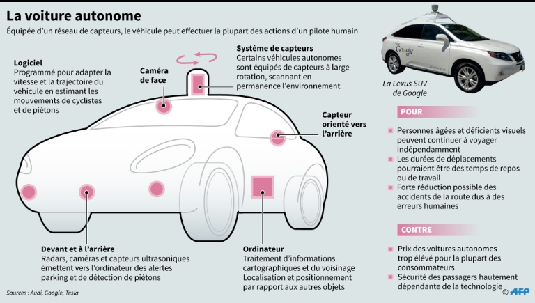
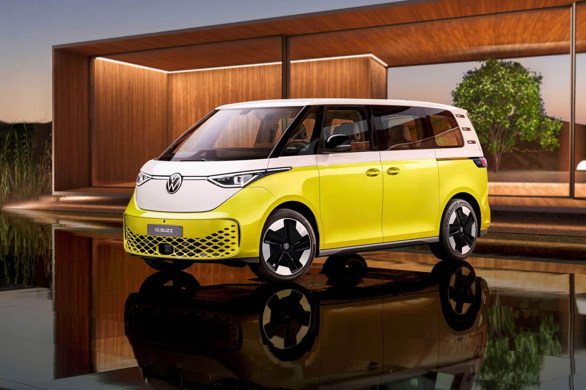
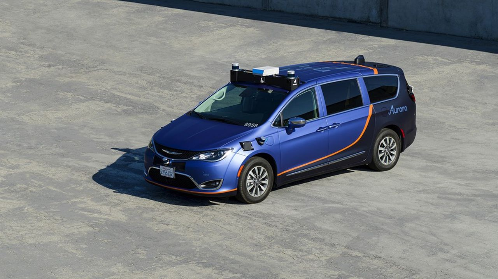
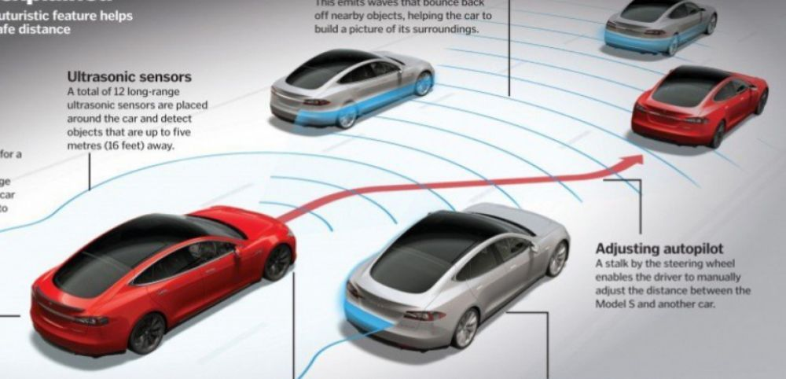
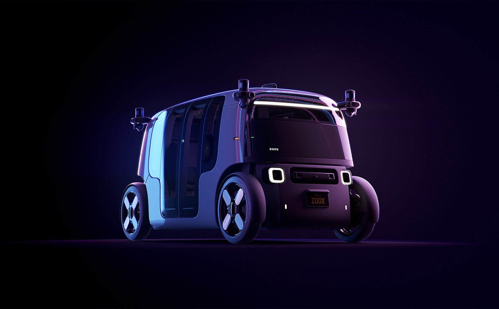

Veille
Réalisations de ma veille techonologique sur les voitures autonomes.Veille technologique.
Comme son nom l'indique, une voiture autonome est un type de véhicule motorisé particulier,
capable de circuler sans intervention de l'homme dans un environnement de conduite normal grâce à un système de pilotage automatique complexe.
Ces dernières années, de nombreuses avancées ont été réalisées dans le domaine de la voiture autonome,
que ce soit du côté des constructeurs automobiles, des start-ups ou des géants de la technologie.
En avril 2021, Waymo, du groupe Alphabet spécialisée dans les voitures autonomes,
s'associe avec Google, et annonce l'ouverture de son service de taxis autonomes à la ville de San Francisco,
après l'avoir testé à Phoenix. Waymo est l'une des entreprises les plus avancées dans le domaine de la voiture autonome,
et cette annonce montre que la technologie commence à être déployée à plus grande échelle.
Voici un schéma de la voiture autonome chez Google avec leurs SUV Lexus :

Pour suivre dans cette lancée
Le groupe Volkswagen a annoncé la création d'une nouvelle entité dédiée à la voiture autonome,
baptisée "Volkswagen Autonomy". Cette entité aura pour mission de développer une plateforme logicielle commune pour les véhicules autonomes du groupe,
qui comprend les marques Volkswagen, Audi et Porsche.
Voici la création :

Dans la même année, la start-up américaine Aurora a annoncé un partenariat avec Uber pour développer des véhicules autonomes destinés au transport de passagers.
Aurora fournira la technologie de conduite autonome, tandis qu'Uber fournira son expertise en matière de réseaux de transport.
La colab Aurora et Uber :

2020, le constructeur automobile Tesla a annoncé une mise à jour majeure de son logiciel de conduite autonome,
qui permettra aux voitures équipées de ce logiciel de rouler de manière autonome dans certaines conditions.
Cette mise à jour a suscité des critiques de la part de certains experts en sécurité routière,
qui estiment que la technologie n'est pas encore suffisamment fiable pour permettre une conduite entièrement autonome.
Ici un shéma explicatif de comment fonctionne la tesla autonome :

Enfin, en septembre 2020, la start-up américaine Zoox, rachetée depuis par Amazon,
a dévoilé son premier véhicule autonome de transport de passagers.
Ce véhicule, qui ressemble à une navette, peut accueillir jusqu'à quatre passagers et circuler à une vitesse maximale de 75 km/h.
La collaboration entre Zoox et Amazon :

La technologie de conduite autonome reste cependant encore en développement,
et de nombreux enjeux restent à résoudre, notamment en matière de sécurité et de réglementation.
Bonus : 2ème veille technologique sur la Réalité Virtuelle au format PDF